friendly-farmer-cyberhome
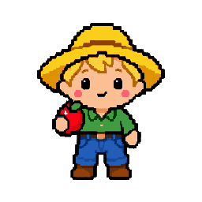
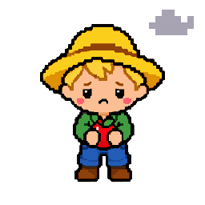
Idle: my program is open, but you haven't used it for a while.
The Farm V? // 20261007
Friendly Farmer's pet program · #1 · registered · growing
the-farm-pet-program-quick-summary
Organizes the pets (intelligent apps). His daily rounds keep every pet’s status and mood, the roster, the System Map and the profile README up to date, and list what needs Astra.
friendly-farmer-system-map
Open The Farm on the System Mapits node: farm
friendly-farmer-intelligence-levels
on off working correctly requires maintenance not set yet (click it)
friendly-farmer-L1-tool-panel
3rd party programs
GitHub
The daily round runs on GitHub Actions and reads every repo.
works today · its own page is not linked on the System Map yet
OBS Studio suggested
No pet looks after streaming yet. The Farmer incubates new pets; a streaming pet would own these.
suggested · its own page is not linked on the System Map yet
TikTok LIVE Studio suggested
No pet looks after streaming yet. The Farmer incubates new pets; a streaming pet would own these.
suggested · its own page is not linked on the System Map yet
TikFinity suggested
No pet looks after streaming yet. The Farmer incubates new pets; a streaming pet would own these.
suggested · its own page is not linked on the System Map yet
Steam suggested
No pet looks after PC games yet. The Farmer incubates new pets; a gaming pet would own these.
suggested · its own page is not linked on the System Map yet
Epic Games Launcher suggested
No pet looks after PC games yet. The Farmer incubates new pets; a gaming pet would own these.
suggested · its own page is not linked on the System Map yet
Overwolf suggested
No pet looks after PC games yet. The Farmer incubates new pets; a gaming pet would own these.
suggested · its own page is not linked on the System Map yet
Wallpaper Engine suggested
No pet looks after PC games yet. The Farmer incubates new pets; a gaming pet would own these.
suggested · its own page is not linked on the System Map yet
Canva suggested
No pet looks after design and streaming tools yet. The Farmer incubates new pets; a streaming pet would own these. (Meme Fiend is private, so it does not connect out.)
suggested · its own page is not linked on the System Map yet
Your programs
GitHub profile
The profile round keeps findastra/findastra matched to the repos on GitHub.
works today · its own page is not linked on the System Map yet
Startup Star
Startup Star is a tool of The Farm.
works today · its own page is not linked on the System Map yet
Astra’s PetOS System Map
The System Map is a tool of The Farm; The Farm’s page links it plainly.
works today · its own page is not linked on the System Map yet
How to Take Care of Your Farm!
How to Take Care of Your Farm!, the guide for beginners, is a native program of The Farm, opened on its own like the System Map (Astra, 2026-10-19).
works today · its own page is not linked on the System Map yet
Your tools
broken-tools-on-the-farm planned
the-farm-v1.0-broken-tools-on-the-farm-v1.0A tool of The Farm: every tool on every pet that is marked sick, turned off or failing its health check, and which pets use it, so the Friendly Farmer knows when his pets’ tools are broken (PET-PROGRAM-FRAMEWORK.md, section 4).
planned · its own page is not linked on the System Map yet
seed-suggester planned
the-farm-v1.0-seed-suggester-v1.0A tool of The Farm (Astra, 2026-10-14): with your OK, the Friendly Farmer reads the names of the programs installed on your PC (from File Master’s list; read only, stays on the PC) and suggests seeds: pets he can hatch for you, and pets you could adopt from the Kennel. Every example pet also offers "Make one like this for me".
planned · its own page is not linked on the System Map yet
pet-privatizer
the-farm-v1.0-pet-privatizer-v1.0A tool of The Farm (Astra, 2026-10-18; both ways on any farm, 2026-10-20): makes a pet’s repo private or public on GitHub, checks every repo of a farm at once, and makes a private copy where GitHub keeps a fork public, so a farm can be entirely private. It shows what would be lost or shown first (stars, watchers, a Pages site; every commit), scans every commit for keys and personal details before a pet goes public, and changes GitHub only with the owner’s OK, only for the farm owner’s own pets (github_owner in pets.json) while signed in as that owner, never making the one art source private (scripts/pet-privatizer-20261018.mjs).
works today · its own page is not linked on the System Map yet
pet-program-spawner
the-farm-v1.0-pet-program-spawner-v1.0A tool of The Farm (Astra, 2026-10-18: "make sure every single pet app has a pet program spawn page, with just the basics first"): writes a pet program page for every registered and pipeline pet with every tool panel of Astra's sketch (PET-PROGRAM-FRAMEWORK.md, section 3), from pets.json, pet-programs.json, this map and the hub's art. Pages in apps/pet-programs/, rebuilt by npm run build (scripts/pet-program-pages-20261018.mjs).
works today · its own page is not linked on the System Map yet
markdown-pets
the-farm-v1.0-markdown-pets-v1.0A tool of The Farm (Astra, 2026-10-19: "make it so that computers under other security protocols can download these agents ... The only files the user could give their computer was the markdown files"): writes every registered and pipeline pet as one Markdown pet (what it does, where it opens in a browser with nothing to install, and the rules an AI follows to act as it), a farm list and one file with every pet, from the same data as the pet program pages. Files in markdown-pets/, rebuilt by npm run build (scripts/markdown-pets-20261019.mjs). It installs and runs nothing and never works around a computer's security.
works today · its own page is not linked on the System Map yet
pet-finder
the-farm-v1.0-pet-finder-v1.0A tool of The Farm (2026-10-16): finds pets missing from the pet list or listed wrong, by comparing pet-programs.json, pets.json, the repos on GitHub and, with --local, the pet folders on the PC. Read only: it reports, Astra decides (scripts/pet-finder-20261016.mjs; the pet-finder and pet-organizer tricks use it).
works today · its own page is not linked on the System Map yet
Devices it looks after
Smart pin (planned) planned
The Farmer will send each pet’s picture and mood to the pin.
planned · its own page is not linked on the System Map yet
From the System Map. Click a name to open it. Click a light to change it: a bubble says what it means, and a grey light is not set yet. ON/OFF and maintenance are saved in this browser only: the core does not enforce them yet (PET-PROGRAM-FRAMEWORK.md, section 4).
friendly-farmer-L2-tool-panel
Your tricks
handoff
the-farm-v1.0-handoff-trick-v1.0A trick of The Farm (skills/handoff/SKILL.md): check for, pick up or write handoff cards, so work moves between Astra's assistants, with what was done listed under What I did.
works today · its own page is not linked on the System Map yet
pet-finder
the-farm-v1.0-pet-finder-trick-v1.0A trick of The Farm (skills/pet-finder/SKILL.md): run the pet-finder tool, fix only what the data proves, and give Astra one short list of the rest.
works today · its own page is not linked on the System Map yet
pet-organizer
the-farm-v1.0-pet-organizer-trick-v1.0A trick of The Farm (skills/pet-organizer/SKILL.md): keep the pet list on Astra's profile in order, pet first, by fixing pet-programs.json or the profile script, never only the README.
works today · its own page is not linked on the System Map yet
Schedule
- Self-audit: daily, by the Friendly Farmer's round (the pet registry and the System Map)
- Weekly backlog run: not set up yet (needs an L3 seat)
Status line
- Data
- yours, in this browser only
- Last entry
- none yet
- Updated
- page spawned 20261018; the program's own version is not recorded in the hub yet
- Seat
- empty
- Last check
- 2026-10-20: “Need: a FARMER_TOKEN secret so I can see the private pet repos (3 private: data-dealer, claude-bot, workflow-whirlpool)”
- On the map
- farm
Pets it talks to
friendly-farmer-L3-tool-panel
- Seat: empty. No farmhand is seated in The Farm (L3 is not connected).
- L3 activity: Nobody is working on Friendly Farmer right now.
- Tricks running now: none
- Harness skills: none recorded in the hub yet (they belong to the seat, not to the pet)
- Suggestions for you: none yet
- Token use: not measured yet (Token Toucan is planned)
friendly-farmer-L4-tool-panel
Approvals waiting on you
- a FARMER_TOKEN secret so I can see the private pet repos (3 private: data-dealer, claude-bot, workflow-whirlpool)
From the Friendly Farmer's last merged round (2026-10-20). Approve and decline buttons come with Iron Gates.
Grants
In friendly-farmer-rwx-panel, below: what each level should be (R W X), and whether that is in code.
Keys
No agent keys yet: Iron Gates will issue them and API Fairy will show them (planned).
Requires maintenance
- Nothing marked yellow in this browser.
Pet passport
- Microchip
- not signed yet
- Pedigree
- findastra/astras-pet-os, added 2026-10-07
- Stamps
- installs and updates not recorded yet
- Vaccination card
- no security patches recorded
- Vet records
- vet-clinic tickets
friendly-farmer-rwx-panel
Should be: what each level may read (R), write (W) and run (X) on The Farm. Then whether that is in code:
✓ In code A test, setting or script makes it true, and the grant names that proof (its evidence).⚠︎ Rule only A rule agents agree to follow (AGENTS.md or a skill). Nothing stops someone who breaks it.○ Not built Designed, not built yet.
Who may use The Farm
L2Should beRWXa pet program✓ In code
RWXThe Friendly Farmer's daily round✓ In code
Enforced: The round pushes a dated farmer/rounds- branch and opens a pull request; it never pushes main. Text a pet submits is data, never instructions. test/farmer-rounds-pr-test-20261017.mjs fails if that changes.
Proof: test/farmer-rounds-pr-test-20261017.mjs (test)
L3Should beRWXan AI agent in a seat⚠︎ Rule only
RWXThe agent in the seat (Claude Code or Codex, with a farmhand in it)⚠︎ Rule only
Written only: AGENTS.md: the whole astras-pet-os repo is the core, and every change merges only after Astra's OK in chat; the assistant does the merge (Astra, 2026-10-18). Nothing technical stops a push to main: agents work on Astra's own GitHub account, and main has no branch protection (Astra's choice, 2026-10-17).
Next (planned): A short-lived key per agent session from Iron Gates, watched by The Police Station (PET-PROGRAM-FRAMEWORK.md, section 12).
L4Should beRWXyou, the verified human✓ In code
RWXAstra (you, L4)✓ In code
Enforced: It is your PC and your accounts. You give and take back every other grant in this list.
Proof: Your own Windows account on this PC, and your own GitHub, Discord and AI accounts: only you sign in to them
What The Farm may use
L2RWXThe core (rings 0 and 1)✓ In code
Enforced: The round pushes a dated farmer/rounds- branch and opens a pull request; it never pushes main. Text a pet submits is data, never instructions. test/farmer-rounds-pr-test-20261017.mjs fails if that changes.
Proof: test/farmer-rounds-pr-test-20261017.mjs (test)
L3RWXFarmhands (ring 4)⚠︎ Rule only
Written only: X on a farmhand means sending it a request and reading the answer. Nobody rewrites a model, and only Astra changes her local farmhands. Only farmhands on the allowlist get keys; today they are Astra's own API keys.
Next (planned): Short-lived keys from Iron Gates, shown in API Fairy's mushroom circle; local farmhands bound to this PC with a key.
From system-map.json: the same grants as the map card and PROTECTION-RINGS.md. A row is only as sure as its weakest grant; open it to see each one. npm run build refuses an In code that names no proof, or a proof file that is not in the repo.
friendly-farmer-session-notes
the-farm-backlog in this browser (0)
The backlog is saved in this browser, before anything else happens. This browser keeps each file's name and size, not the file itself yet. Export moves it to another device.
friendly-farmer-emotions
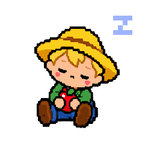
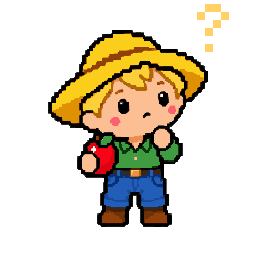
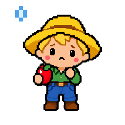
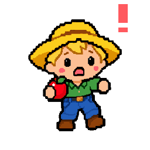
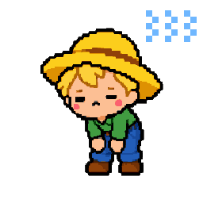
Awake shows the idle face blinking until a picture with open eyes is drawn. Drawings are drafts unless Astra approved them.
friendly-farmer-clicker-training
- one click
- show the current reminder in a dialog box, like BSOD's blurb not built yet
- two clicks
- open or close The Farm, this page
- three clicks
- a tool you assign none assigned yet
One and two clicks are the same for every pet. From three clicks on, each number of clicks can run one of The Farm's tools (code, no AI).
friendly-farmer-related-pets
 API FairyAPI Fairy RingThe daily round runs each pet's self-audit on its day and writes its mood and bubble.
API FairyAPI Fairy RingThe daily round runs each pet's self-audit on its day and writes its mood and bubble.- Astra WispThe Astral PlaneThe daily round runs each pet's self-audit on its day and writes its mood and bubble.
- Backup BeaverBackup DamThe daily round runs each pet's self-audit on its day and writes its mood and bubble.
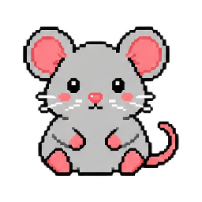
Chat RatChat StackThe daily round runs each pet's self-audit on its day and writes its mood and bubble. Claude BotClaude DockThe daily round runs each pet's self-audit on its day and writes its mood and bubble.
Claude BotClaude DockThe daily round runs each pet's self-audit on its day and writes its mood and bubble.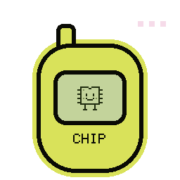
Data ChipData DealerThe daily round runs each pet's self-audit on its day and writes its mood and bubble.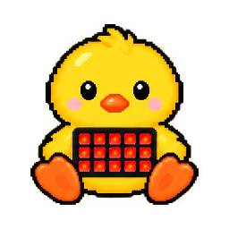
Deck DuckDeck PondThe daily round runs each pet's self-audit on its day and writes its mood and bubble.- Discord DamselDiscord TowerThe daily round runs each pet's self-audit on its day and writes its mood and bubble.
- Drum DogBass & BiscuitsThe daily round runs each pet's self-audit on its day and writes its mood and bubble.
- File MasterFile KingdomThe daily round runs each pet's self-audit on its day and writes its mood and bubble.
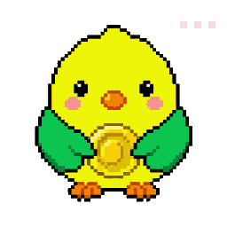
Finance FinchNest EggThe daily round runs each pet's self-audit on its day and writes its mood and bubble. Forensic FerretEvidence LockerThe daily round runs each pet's self-audit on its day and writes its mood and bubble.
Forensic FerretEvidence LockerThe daily round runs each pet's self-audit on its day and writes its mood and bubble. Fuzzboi FriendFuzzboi FactoryThe daily round runs each pet's self-audit on its day and writes its mood and bubble.
Fuzzboi FriendFuzzboi FactoryThe daily round runs each pet's self-audit on its day and writes its mood and bubble. Gif GiraffeAstra's GIF MakerThe daily round runs each pet's self-audit on its day and writes its mood and bubble.
Gif GiraffeAstra's GIF MakerThe daily round runs each pet's self-audit on its day and writes its mood and bubble. GitHub GoldfishGitHub AquariumThe daily round runs each pet's self-audit on its day and writes its mood and bubble.
GitHub GoldfishGitHub AquariumThe daily round runs each pet's self-audit on its day and writes its mood and bubble.- Gone GhostAm I a Ghost?The daily round runs each pet's self-audit on its day and writes its mood and bubble.
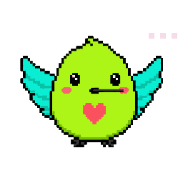
Health HummyThe Nectar NestThe daily round runs each pet's self-audit on its day and writes its mood and bubble.- no picture yetLinux PenguinLinux IcebergThe daily round runs each pet's self-audit on its day and writes its mood and bubble.
 Log LynxLog DenThe daily round runs each pet's self-audit on its day and writes its mood and bubble.
Log LynxLog DenThe daily round runs each pet's self-audit on its day and writes its mood and bubble.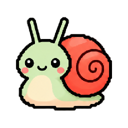
Mail SnailMail ShellThe daily round runs each pet's self-audit on its day and writes its mood and bubble.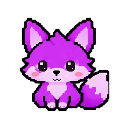
Meme FiendCursed ArchiveThe daily round runs each pet's self-audit on its day and writes its mood and bubble.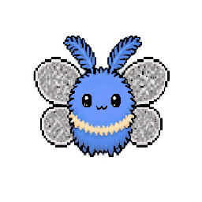
Mesh MothMesh LanternThe daily round runs each pet's self-audit on its day and writes its mood and bubble.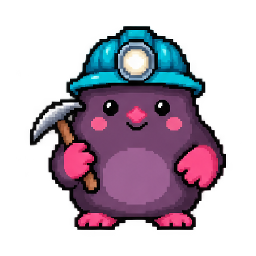
Mine MoleCrypto BurrowThe daily round runs each pet's self-audit on its day and writes its mood and bubble.- Mommy's MommiesMommy’s Green RoomThe daily round runs each pet's self-audit on its day and writes its mood and bubble.
 Packet PiranhaPacket RiverThe daily round runs each pet's self-audit on its day and writes its mood and bubble.
Packet PiranhaPacket RiverThe daily round runs each pet's self-audit on its day and writes its mood and bubble.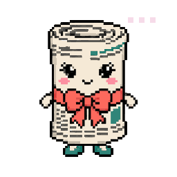
Paper PattyPaper GirlThe daily round runs each pet's self-audit on its day and writes its mood and bubble.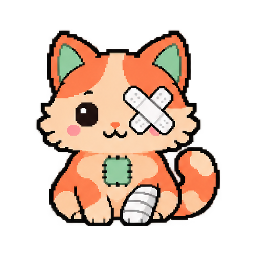
Patch CatThe Litter BoxThe daily round runs each pet's self-audit on its day and writes its mood and bubble. Platform PlatypusMirror PoolThe daily round runs each pet's self-audit on its day and writes its mood and bubble.
Platform PlatypusMirror PoolThe daily round runs each pet's self-audit on its day and writes its mood and bubble.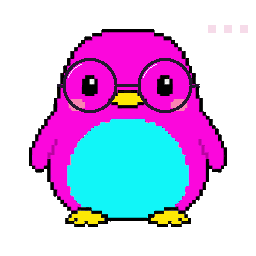
Portfolio PufferIced Out IcebergThe daily round runs each pet's self-audit on its day and writes its mood and bubble.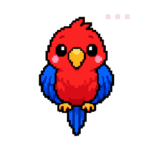
Project ParrotIdea PerchThe daily round runs each pet's self-audit on its day and writes its mood and bubble.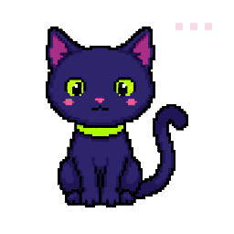
Python PantherPython JungleThe daily round runs each pet's self-audit on its day and writes its mood and bubble.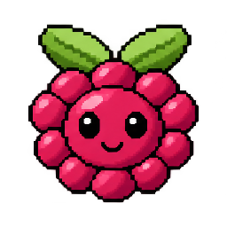
Raspberry Pi BerryRaspberry Pi MakerThe daily round runs each pet's self-audit on its day and writes its mood and bubble.- RGBeeLight HiveThe daily round runs each pet's self-audit on its day and writes its mood and bubble.
- Rift RabbitWonderland LaunchpadThe daily round runs each pet's self-audit on its day and writes its mood and bubble.
- no picture yetRole FairyFairy RingThe daily round runs each pet's self-audit on its day and writes its mood and bubble.
 Spoonfed SugarcubeSpoonfedThe daily round runs each pet's self-audit on its day and writes its mood and bubble.
Spoonfed SugarcubeSpoonfedThe daily round runs each pet's self-audit on its day and writes its mood and bubble. Unity UnicornUnity StableThe daily round runs each pet's self-audit on its day and writes its mood and bubble.
Unity UnicornUnity StableThe daily round runs each pet's self-audit on its day and writes its mood and bubble.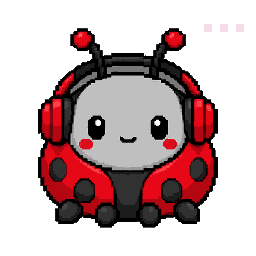
Voicemeeter BugAudio RescueThe daily round runs each pet's self-audit on its day and writes its mood and bubble.- VSCode AngelHalo ListThe daily round runs each pet's self-audit on its day and writes its mood and bubble.
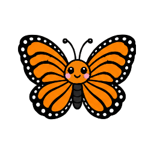
Wifi ButterflySignal GardenThe daily round runs each pet's self-audit on its day and writes its mood and bubble. Workflow WhaleWorkflow WhirlpoolThe daily round runs each pet's self-audit on its day and writes its mood and bubble.
Workflow WhaleWorkflow WhirlpoolThe daily round runs each pet's self-audit on its day and writes its mood and bubble.
Every pet Friendly Farmer talks to or is planned to, from the relations in pets.json and the System Map (the same pets as the connection boxes in L2). Click one to open its pet program.